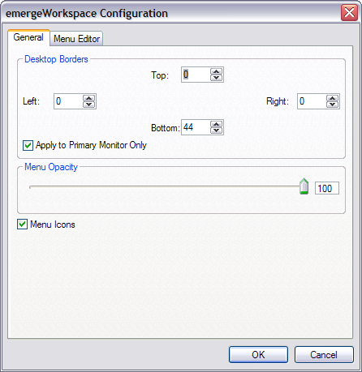
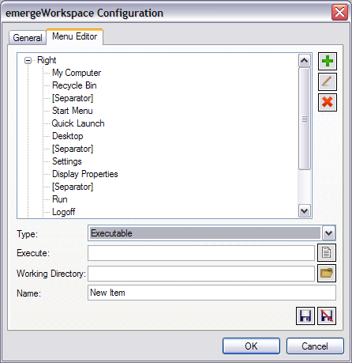
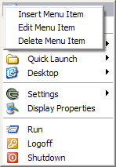
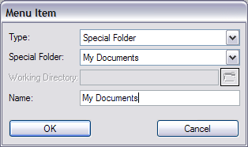
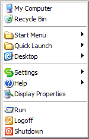
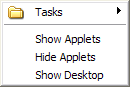

| About |
emergeWorkspace is the desktop component of Emerge Desktop. It provides the mouse RightClick and MiddleClick menus.
| Configuration |
Two major components of Emerge Desktop are dependent on emergeWorkspace: the Desktop Settings, which define the active desktop area and general menu options, and the Menu Editor, for configuring the the RightClick and MiddleClick menus on the desktop.
emergeWorkspace is configured by right-clicking on the desktop, clicking on Setting, and Configure, which opens the configuration menu. The first tab is General:

Alternatively the user can type WorkspaceSettings in the emergeCommand command window.
The Top, Left, Right, and Bottom Desktop Borders are set (in pixels) to define areas between the edges of the monitor(s) and the maximized application windows, typically to leave marginal areas for the applets' windows, and/or for mouse access to the background.
The desktop borders can Apply to Primary Monitor Only, or to all monitors in a multi-monitor setting.
The Menu Opacity for the RightClick and MiddleClick menus can be set from 100 (opaque) to 20 (almost transparent). Maximum transparency is 20 to prevent the menus from becoming unfindable.
Menu Icons may be on or off the menus.
Aero Menus provides Aero-style menus for Windows Vista and above.
The configuration dialog box's second tab is the Menu Editor for the RightClick and MiddleClick:

To Add  a new menu item, the user selects one of the following Types:
a new menu item, the user selects one of the following Types:
Separator, Executable (in Value window, Browse  for a file), Internal Command (list in Value window is here), Date Time (available formats which can be entered in Value window are here), Special Folders (list in Value window is: My Documents, My Computer, My Network Places, Control Panel, Recycle Bin), Submenu (which, after clicking Save
for a file), Internal Command (list in Value window is here), Date Time (available formats which can be entered in Value window are here), Special Folders (list in Value window is: My Documents, My Computer, My Network Places, Control Panel, Recycle Bin), Submenu (which, after clicking Save  , is populated with any Type of items by clicking on the + sign, highlighting an item inside the Submenu, and clicking on Add
, is populated with any Type of items by clicking on the + sign, highlighting an item inside the Submenu, and clicking on Add  for each additional item), Folder Menu (in Value window, Browse
for each additional item), Folder Menu (in Value window, Browse  to any Folder*), Tasks Menu (i.e. to display the running Tasks from a folder), Settings Menu (i.e. the Emerge Desktop menu), Help Menu (Emerge Desktop Help Menu).
to any Folder*), Tasks Menu (i.e. to display the running Tasks from a folder), Settings Menu (i.e. the Emerge Desktop menu), Help Menu (Emerge Desktop Help Menu).
The user then types a Name for the new item, and clicks on Save  (or Discard
(or Discard  to start over). Pressing the OK button saves the current settings and closes the configuration dialog box.
to start over). Pressing the OK button saves the current settings and closes the configuration dialog box.
Menu items displayed in the window can be Modified  or Deleted
or Deleted  after highlighting them.
after highlighting them.
After the user adds, deletes or modifies incorrectly an item, she can undo changes by clicking the Cancel button. A dialog box will open asking for confirmation to close the configuration dialog box without saving the changes made.
* Note: Folder items can be merged by adding a Pipe (|) between folders (e.g. Start menu is %StartMenu%|%CommonStartMenu%). This is particularly useful for items like Start Menu, Desktop or My Documents.
Menu items can be moved up and down by dragging them past other items.
The context menu of any executable item in the Desktop menu includes "Run as..." or "Run Elevated", both allowing to run these items from an administrator account after selecting the administrator's user name (or typing an other existing user name) and entering the password in the Run As dialog box. The Emerge Desktop context menu also includes "Open Directory".
The RightClick and MiddleClick menus can also be edited without opening the Menu Editor, by right-clicking an item directly on the menu:

Insert Menu Item and Edit Menu Item bring up this dialog box (the fields are filled the same way as above):

Delete Menu Item deletes the highlighted item. OK and Cancel close the dialog box
| Usage |
Right-clicking on the desktop brings up the RightClick menu. The default RightClick menu includes Windows standard items and Settings, Emerge Desktop configuration options:
Middle-clicking on the desktop brings up the MiddleClick menu. The default MiddleClick includes some of Emerge Desktop's internal commands:
